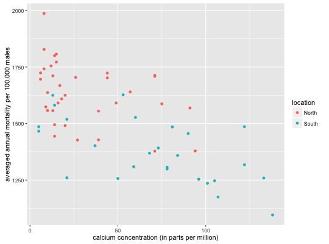

Mortality and drinking water hardness for 61 cities in England and Wales
HARDWATER
A data frame with 61 observations on the following 4 variables:
location (a factor with levels North and South indicating whether the town is as far north as Derby or further)
town (the name of the town)
mortality (average annual mortality per 100,000 males)
hardness (calcium concentration (in parts per million))
D. J. Hand, F. Daly, A. D. Lunn, K. J. McConway and E. Ostrowski. 1994. A Handbook of Small Datasets. Chapman and Hall/CRC, London.
These data were collected in an investigation of environmental causes of disease. They show the annual mortality rate per 100,000 for males, averaged over the years 1958-1964, and the calcium concentration (in parts per million) in the drinking water supply for 61 large towns in England and Wales. (The higher the calcium concentration, the harder the water.)
Ugarte, M. D., Militino, A. F., and Arnholt, A. T. 2015. Probability and Statistics with R, Second Edition. Chapman & Hall / CRC.
ggplot(data = HARDWATER, aes(x = hardness, y = mortality, color = location)) + geom_point() + labs(y = "averaged annual mortality per 100,000 males", x = "calcium concentration (in parts per million)")